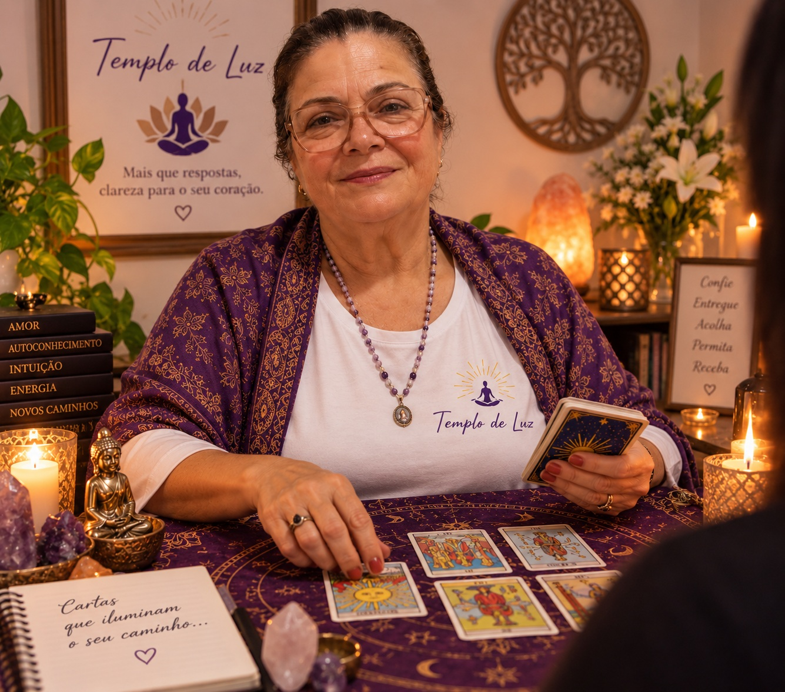
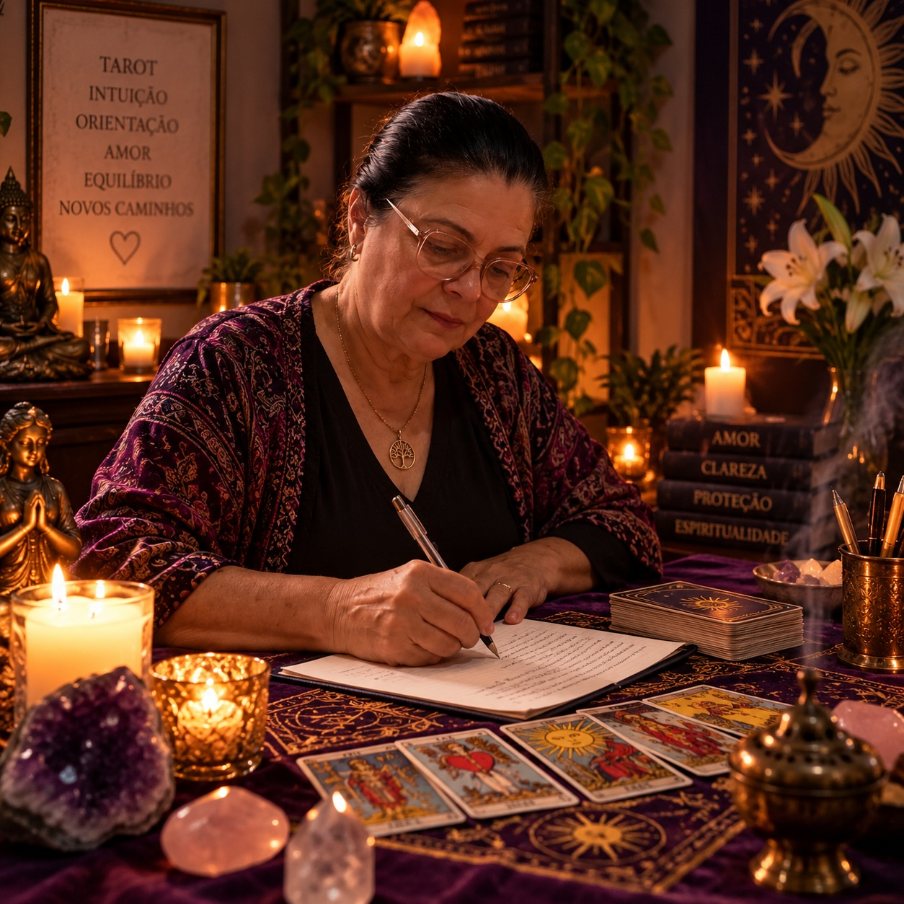

Sua amarração amorosa de 3 a 7 dias pode trazer a pessoa amada de volta e sua leitura foi reservada para 18h52
Esse é o momento de agir: a taróloga Milena Medeiros vai abrir as cartas para ver sentimentos, bloqueios, terceira pessoa e o caminho da amarração amorosa para aproximar sua pessoa amada.
Antes de continuar, veja o que outras famílias sentiram
Mensagens reais enviadas após o acolhimento espiritual e leituras entregues da taróloga Milena.
Toque no vídeo para ouvir o relato recebido pelo Templo da Luz Amorosa.
A taróloga responsável
Milena Medeiros

Há 33 anos dedicando sua vida ao acolhimento espiritual. Milena conduz leituras amorosas com sigilo, firmeza e cuidado.
Por que a leitura de tarot de sua pessoa amada é 100% gratuita, mas a vela no altar precisa ser mantida com a sua ajuda?
A mediunidade de Milena Medeiros é um dom divino guiado pela cuidado espiritual de os arcanos maiores e a espiritualidade amorosa — por isso, você jamais pagará por uma linha sequer da leitura de tarot. A mensagem de quem você ama é um presente sagrado dos céus.
No entanto, para que a taróloga consiga realizar o recolhimento espiritual e sintonizar a presença de sua pessoa amada aqui na Terra, o altar de tarot necessita de insumos físicos consagrados que não são gratuitos na matéria:

1. Ritual de Aproximação Amorosa em Nome de sua pessoa amada
A cera pura de 7 dias é consagrada e permanece acesa diante do altar durante todo o recolhimento, funcionando como ponto de ancoragem e farol de luz para a sintonia.
2. Papel Especial de Algodão Puro
Folhas de mapa amoroso físico de alta gramatura onde a letra manuscrita, os traços originais e as assinaturas de sua pessoa amada são vertidos fisicamente.
3. Ritual Amoroso & Manutenção do Atendimento
O Templo da Luz Amorosa é mantido unicamente pelas doações das famílias acolhidas, alimentando semanalmente dezenas de irmãos necessitados.
O Templo da Luz Amorosa é uma obra de caridade sem fins lucrativos. Sua liberação voluntária cobre unicamente a vela de cera virgem de 7 dias com o nome da sua pessoa amada, o mapa amoroso consagrado e o acolhimento fraterno.
Consagre a vela e os materiais da sessão de sua pessoa amada
Sua Liberação da Leitura para a Sessão de sua pessoa amada
A leitura de tarot é 100% gratuita por sigilo e cuidado espiritual. O valor cobre unicamente os insumos físicos do altar de tarot (ritual de aproximação amorosa, mapa amoroso e acolhimento).
Amarração Amorosa com 5 Respostas
A opção mais indicada e viável do Templo: inclui 5 respostas diretas e o ritual de amarração amorosa de 3 a 7 dias para desbloquear caminhos e aproximar quem você ama.
Após confirmar a liberação via PIX, você será redirecionado(a) automaticamente.
Desejo registrar minha intenção no mapa amoroso sem realizar a contribuição da vela agora
Sua mensagem será salva no mapa amoroso sagrado e você poderá redigi-la antes de enviar à taróloga.
Sua Contribuição Protegida e Abençoada
Selo de Paz Espiritual
Consagração com oração e vela sagrada acesa no altar de tarot para a sua pessoa amada.
Selo de Garantia de 7 Dias
Se a mensagem não trouxer paz ao seu coração, devolvemos 100% da sua contribuição.
Dúvidas frequentes e acolhimento
A taróloga Milena Medeiros abre o campo amoroso com o nome que você informou e interpreta os sinais das cartas. A leitura aponta sentimentos, bloqueios, possível terceira pessoa, caminhos de aproximação e orientação para agir com mais clareza.